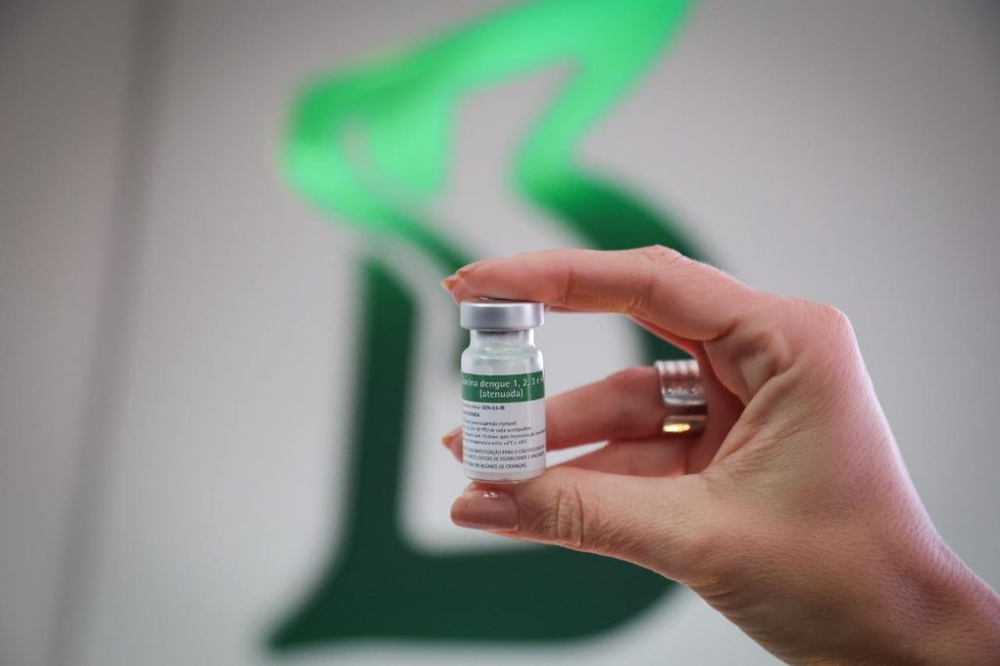

Suspiro
News
Suspiro
News

Criada por IA
A vacina contra dengue desenvolvida pelo Instituto Butantan, em São Paulo, demonstrou proteção duradoura de até 5 anos, com eficácia de 80,5% contra formas graves da doença, segundo estudo publicado na prestigiada Nature Medicine. Essa dose única é um marco da ciência nacional, trazendo esperança real para milhões afetados pela dengue, especialmente após o recorde de 6,6 milhões de casos no Brasil em 2025.
O ensaio clínico de fase 3, o "padrão-ouro" em vacinas, acompanhou 16.235 pessoas de 2 a 59 anos em todas as regiões do país. A eficácia geral contra dengue sintomática foi de 65%, subindo para 77,1% em quem já teve contato prévio com o vírus e 80,5% contra casos graves ou com sinais de alarme. Nenhum vacinado precisou de hospitalização por dengue grave, enquanto o grupo placebo registrou casos, um alívio que pode salvar vidas.
Sem sinais de problemas de segurança: efeitos colaterais leves ocorreram igual no grupo vacinado e no placebo. A Butantan-DV, tetravalente, usa vírus atenuados para proteger contra os quatro sorotipos (DENV-1 a 4), com testes confirmando 73% contra DENV-1 e 55,7% contra DENV-2, os que circularam no período. Ela é segura tanto para iniciantes quanto para quem já foi infectado, sem risco de piorar infecções futuras.
A vacina já está sendo entregue ao Programa Nacional de Imunizações (PNI), com 1,3 milhão de doses iniciais a partir de janeiro de 2026, começando por profissionais de saúde e adultos de 59 anos. Combinada ao combate ao mosquito Aedes aegypti, é a estratégia ideal para reduzir hospitalizações e mortes. Essa inovação 100% brasileira ilumina o caminho contra epidemias, provando o poder da ciência em ação.
Links relacionados: https://saude.sp.gov.br/coordenadoria-de-controle-de-doencas/noticias/06032026-vacina- da-dengue-do-instituto-butantan-mantem-805-de-eficacia-contra-casos-graves-apos-cinco-anos